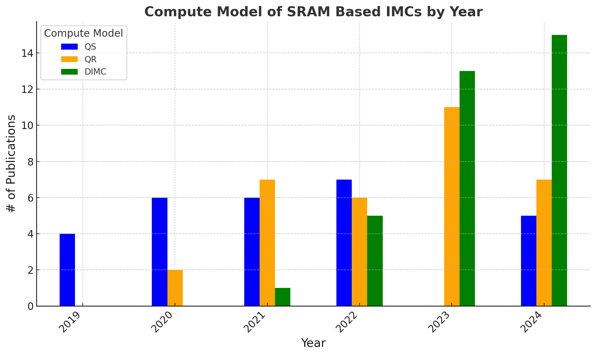
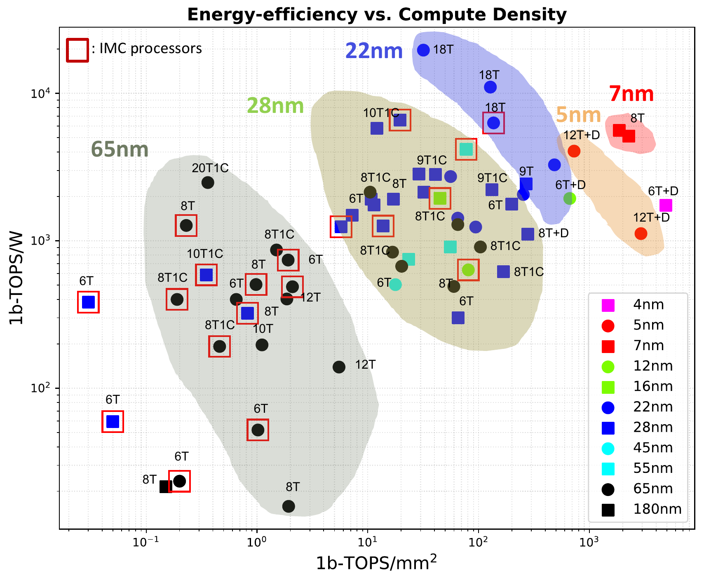
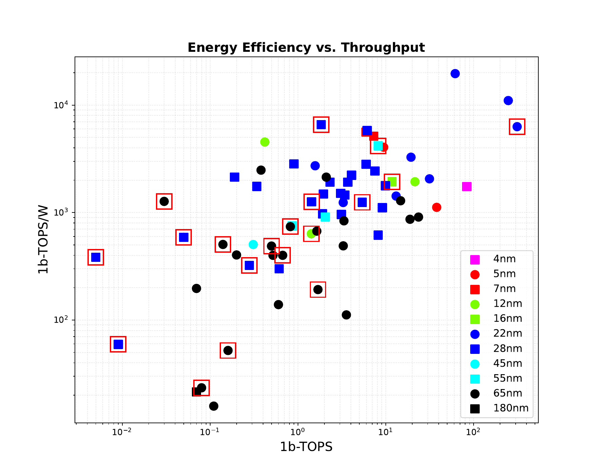
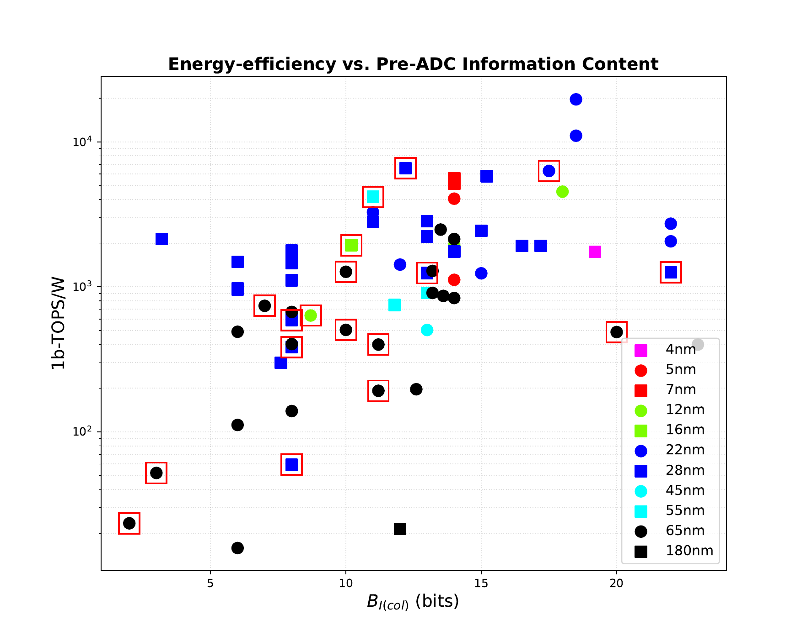
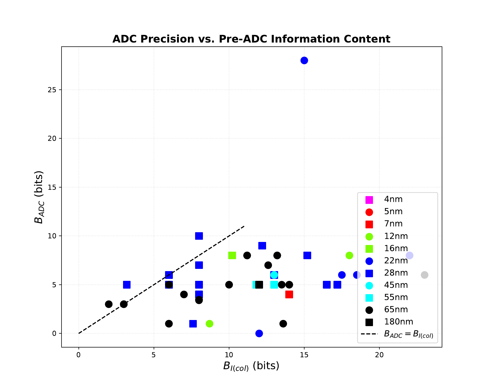
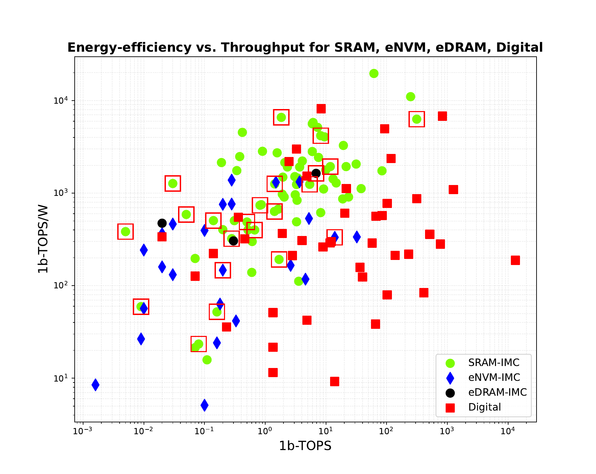
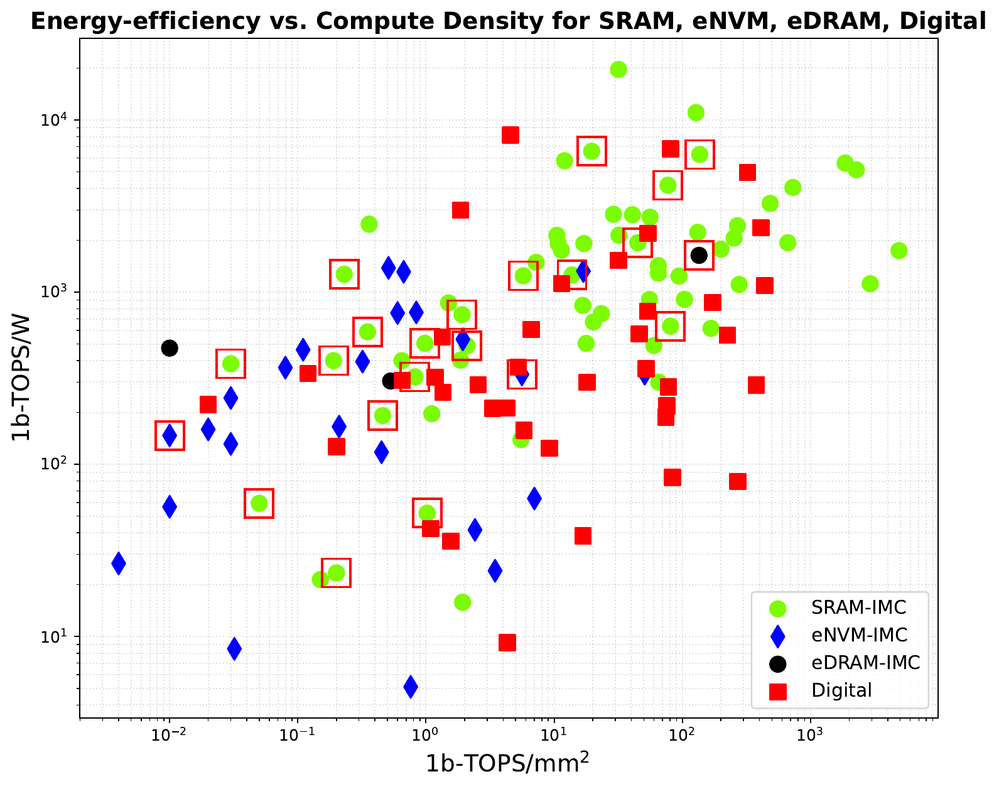
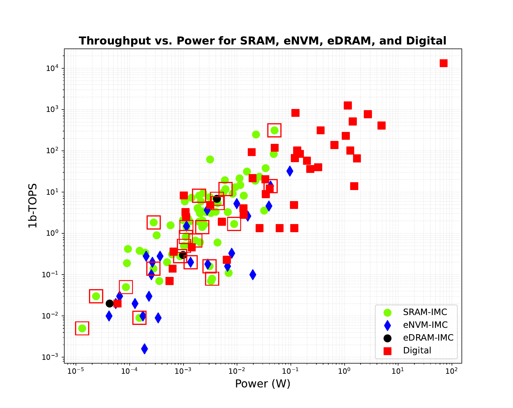

2024 snapshot
Read the field across more than one axis.
These plots are generated by the repository’s Python analysis from the indexed database. Red outlines identify processor-level IMC designs where enabled by the source plot.
Publication mix
SRAM compute models evolve year by year.
The repository tracks charge sharing (QS), charge redistribution (QR), and digital IMC (DIMC) papers as separate design families. This view counts the represented SRAM publications by compute model and year.
The October 2024 update adds only three designs because the database prioritizes bank-level innovations with enough disclosed information to validate metrics.

Comparative views
Seven reproducible projections.
The gallery uses the repository’s latest 2024 figures without changing the plotted data or annotations.






